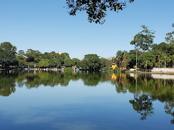
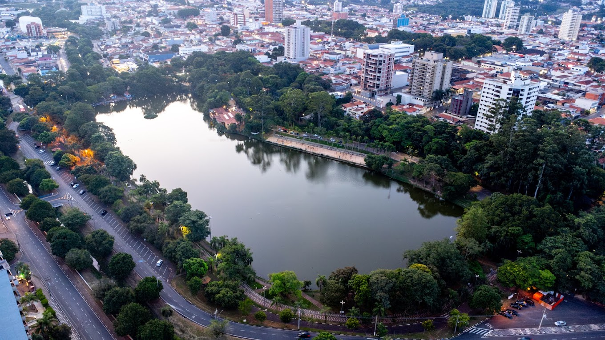

Conheça um pouco da História de Araras
O primeiro registro do povoado foi em 1818, através de uma sesmaria de légua e meia, formada pelas bacias hidrográficas do rio Mogi, ribeirão Itapura e ribeirão das Araras, em terras pertencentes ao município de Limeira. Em 1862, o proprietário da sesmaria erguia a primeira capela de Nossa Senhora do Patrocínio das Araras, rodeada de algumas casas. A inauguração foi em 15 de agosto de 1862, Dia da Padroeira.
Em maio de 1865, os então proprietários da sesmaria, Bento de Lacerda Guimarães (futuro Barão de Araras), e José de Lacerda Guimarães (Barão de Arary), doaram o terreno para o patrimônio da respectiva igreja dedicada a Nossa Senhora do Patrocínio.
Em 24 de março de 1871, o povoado de Nossa Senhora do Patrocínio foi elevado à categoria de vila, passando a partir daquele momento a constituir um município, que já possuía cinco mil habitantes. A primeira eleição de vereadores foi em 07 de setembro de 1872. O município foi instalado em 07 de janeiro de 1873, com a constituição da 1ª Câmara Municipal e em 02 de abril de 1879 foi elevada à categoria de cidade.
As grandes fazendas de lavoura de café predominavam na cidade e eram responsáveis pelo progresso que surgia na região. Em abril de 1877, os trilhos da Companhia Paulista de Estrada de Ferro eram a principal forma de escoamento da produção agrícola da região, o que acelerou o progresso da cidade.
A imigração foi grande influenciadora na formação da população de Araras. Com o ciclo do café, italianos, portugueses, suíços e alemães se incorporaram à vida econômica que vinha sofrendo prejuízo com a falta de mão de obra na lavoura devido à abolição da escravatura.
Fundadores de Araras
Bento de Lacerda Guimarães e José de Lacerda Guimarães, fundadores de Araras, eram filhos de Antônio de Lacerda Guimarães e Maria Franco, lavradores em Belém de Jundiaí, hoje Itatiba.
Em dezembro de 1847, os irmãos contraíram matrimônio, o primeiro com Manoela Assis de Cássia, e o segundo com Clara Miquelina de Jesus, filhas de Alferes Franco, possuidor de uma das maiores fortunas da época e que, parte de seu patrimônio, localizava-se em Araras.
Após o casamento, os irmãos concretizaram a sociedade Lacerda & Irmãos, cujo objetivo principal era a cultura de café, nos sítios Montevidéu (hoje Fazenda Montevidéu) e Bocaina.
Fonte: Prefeitura de Araras
Pontos Turísticos de Araras SP
Parque Municipal Fábio da Silva Prado - Lago Municipal


Curiosidade de Araras
Araras, no interior de São Paulo, destaca-se por abrigar a primeira e mais antiga fábrica da Nestlé no Brasil (1921), ostentar o título de "Cidade das Árvores" devido à sua forte arborização, e ter um teatro estadual assinado pelo renomado arquiteto Oscar Niemeyer.